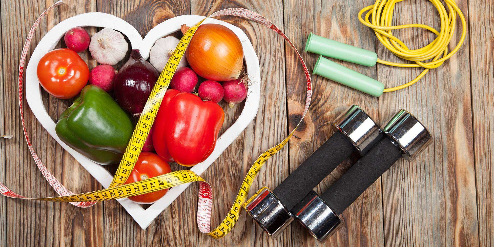

Nutrição
Dicas e benefícios de uma boa alimentação
NUTRIÇÃO ESPORTIVA

De maneira simples, podemos dizer que nutrição esportiva é a área que estuda a relação entre alimentação e prática de esporte.
Seja por atletas profissionais e amadores ou praticantes de atividades físicas. Trata-se da aplicação dos conhecimentos de nutrição,
fisiologia e bioquímica na prática de exercícios. Isso é feito com o objetivo de melhorar o desempenho, otimizar a recuperação pós-exercício e promover saúde.
Em função da influência dos nutrientes no desempenho do organismo, é possível buscar melhores resultados mudando a alimentação.
As principais metas costumam ser a perda de gordura e o ganho de massa magra, ambos diretamente relacionados à nutrição. Além disso,
o esforço físico excessivo pode provocar alterações fisiológicas e desgaste nutricional no atleta. Por isso, é preciso fazer a correta compensação por meio da alimentação.
Na prática, é tida como uma especialidade da nutrição voltada ao atendimento de atletas e pessoas que praticam atividade física regular.
Individuados que buscam melhorar o seu rendimento e modificar a composição corporal. Por isso, vem ganhando mercado também nas academias. Além de objetivar indivíduos mais saudáveis,
o nutricionista esportivo atua no sentido de melhorar o desempenho de seus pacientes na prática do esporte. Assim, a base dessa ciência é a conjugação dos benefícios desses dois pilares da boa saúde: exercício e alimentação.
IMPORTÂNCIA
Proteínas, lipídeos, carboidratos vitaminas e minerais são nutrientes que fornecem disposição e energia, além de serem responsáveis
pela construção e reparação dos músculos após a prática do exercício. Já a atividade física regula o metabolismo, melhora a qualidade dos
órgãos e ossos e contribui para a queima de gordura. Dessa maneira, a dieta deve ser associada ao tipo de exercício, uma vez que as quantidades
e os nutrientes necessários são diferentes, de acordo com a modalidade praticada e a composição corporal do indivíduo. Assim, o plano alimentar de
alguém que pratica atividade física regularmente precisa ser diferenciado, de acordo com o tipo de exercício executado e com a duração do mesmo.
O atendimento deve ser global, considerando as individualidades do atleta, suas necessidades energéticas, funcionamento de sistema digestivo, hormonal,
dentre outros, além dos impactos de tudo isso no desempenho durante a atividade e vice-versa. Para isso, é preciso um conhecimento aprofundado sobre
fisiologia do exercício, o que não necessariamente é requerido de um nutricionista geral. Por isso a especialização em nutrição esportiva é tão importante.
Diante das fortes tendências atuais de busca por um corpo mais saudável e mais qualidade de vida, cada vez mais pessoas buscam adaptar
sua alimentação e estilo de vida, buscando equilíbrio e rendimento, aumentando a demanda pelo atendimento personalizado no esporte.
Cresce o número de veganos e vegetarianos, bem como consumidores de produtos integrais e orgânicos, e, principalmente, de praticantes de atividade física.
Levando em conta as necessidades desse paciente mais ativo e consciente, é importante que os profissionais de nutrição estejam aptos a orientá-los,
no que diz respeito à nutrição esportiva.